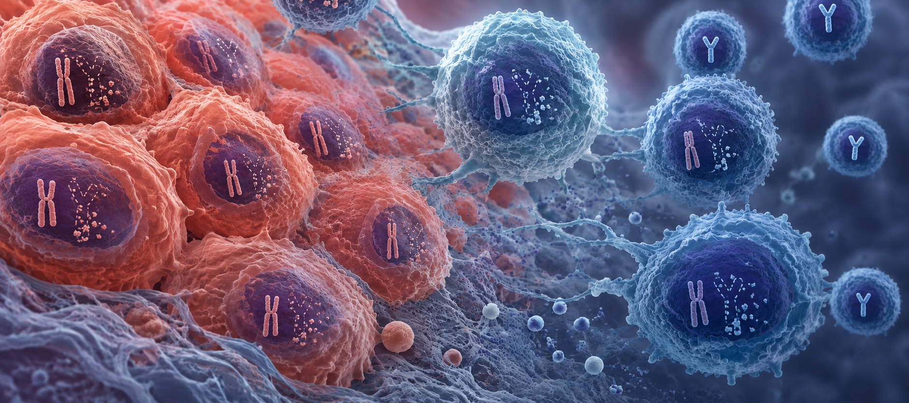
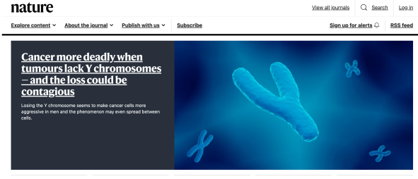

01
Tumor–immune co-evolution
Defining how cancer-associated genomic alterations shape immune-cell states, systemic immunity, and clinical outcome across human tumors.
Academic profile
Physician-Scientist in Computational & Translational Oncology
Research Bioinformatician · Cedars-Sinai Medical Center · Los Angeles, California
My research examines how genomic alterations reshape tumor–immune ecosystems and influence cancer progression, treatment response, and patient outcome. Urologic oncology—particularly bladder and urothelial cancer—is the clinical anchor of this work.
Research overview
I integrate clinical cohorts with cancer genomics, single-cell and spatial multi-omics, computational modeling, and functional genomics. The aim is to identify mechanisms of immune escape and therapy resistance, then translate them into biomarkers and therapeutic hypotheses.
A central theme of my work is loss of the Y chromosome (LOY) in cancer. My research has connected LOY to adaptive immune evasion in bladder cancer and, more recently, to coordinated changes across cancer cells and T cells in pan-cancer tumor ecosystems.
This program extends to T-cell exhaustion and differentiation, AI-enabled radiogenomics, treatment-response biomarkers, and current work in CAR-T systems and perturbational genomics.

Research areas
Three connected areas define my research program, from disease-focused clinical questions to broader mechanisms of tumor immunity.
Defining how cancer-associated genomic alterations shape immune-cell states, systemic immunity, and clinical outcome across human tumors.
Developing molecular and imaging-based approaches for staging, risk assessment, treatment response, and precision care in bladder and urothelial cancer.
Combining regulatory modeling, CRISPR-based perturbation, and single-cell analysis to study T-cell dysfunction and improve immune-cell therapies.
Publications
Representative publications in tumor immunology, cancer genomics, functional genomics, and precision urologic oncology.
News & recognition
Selected coverage and recognition related to my research program.

The accompanying story discussed how Y-chromosome loss in tumors and immune cells may together influence cancer outcome.
Background
Trained in clinical medicine and oncology, I work across clinical, computational, and experimental disciplines. This background supports a research program grounded in patient needs and focused on mechanistic and translational questions.
My academic service includes peer review, editorial activity, and leadership within Prostate Cancer Foundation young-investigator working groups.
I welcome academic collaborations in urologic oncology, tumor immunology, and computational and translational cancer research.